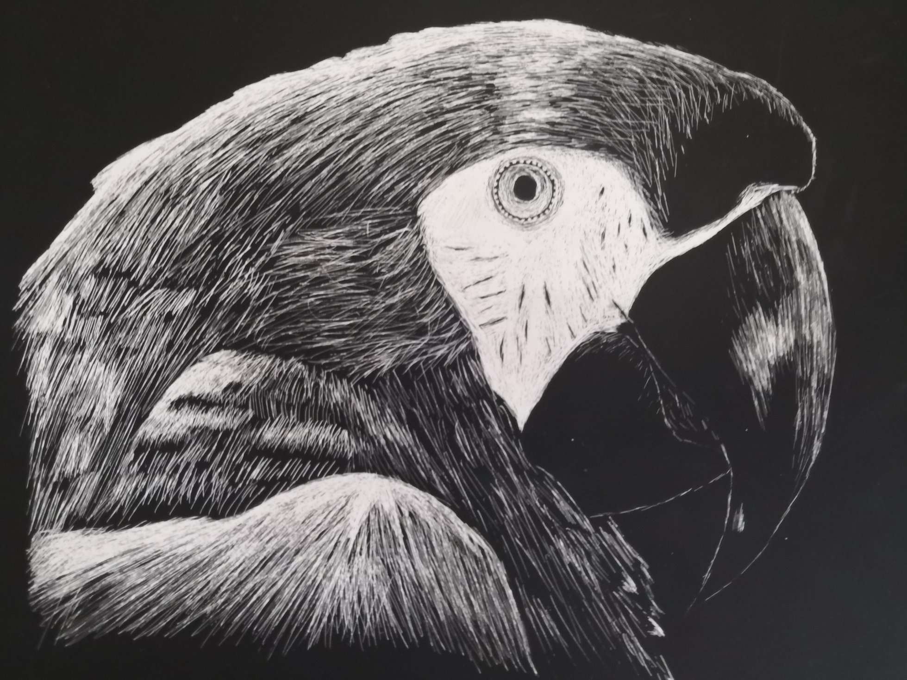

2nd Year CM Major at Georgia Institute of Technology looking to do front-end UI/UX projects with multiple interests in back-end programming and art.



Bio
Currently 19 years old, I have lived in the state of Georgia for 16 years. From the beginning of middle school, I was always interested in programming and its creative side to it, and currently, I am learning front-end programming as a way to expand upon those interests. In terms of coding experience, I have gone through six years of computer science education. I know Java, JavaScript, Python, and a moderate amount of HTML & CSS. This site holds the purpose to show my growth and achievements throughout my career here at Georgia Tech and beyond.